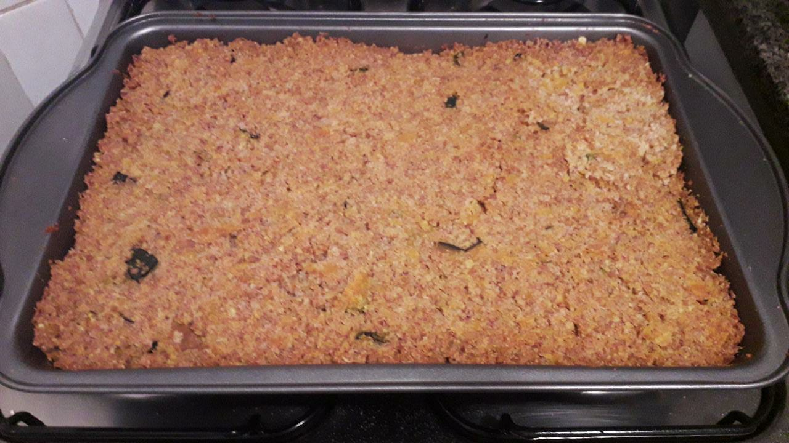
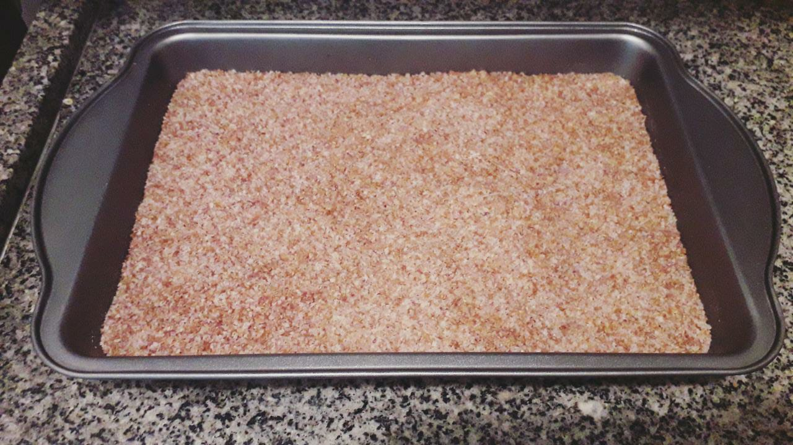
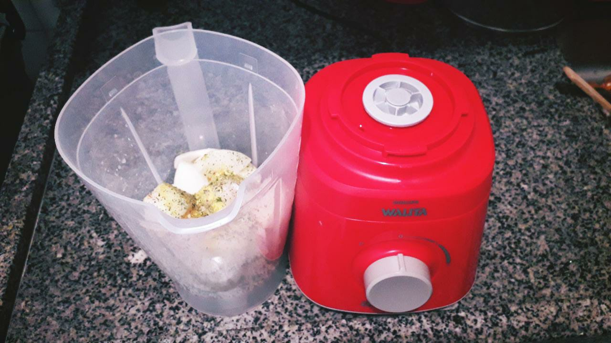
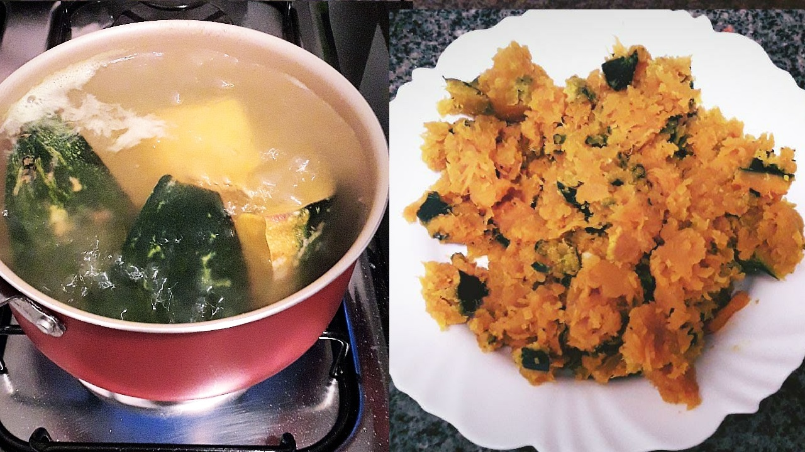
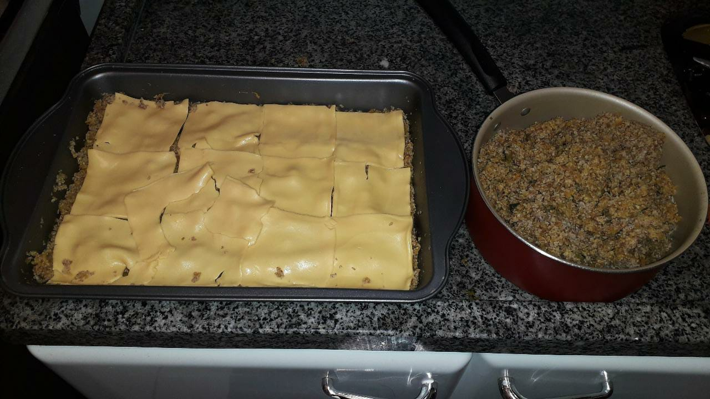
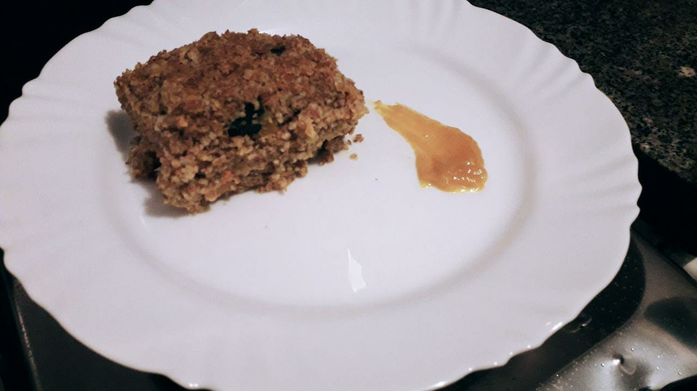

Quibe Vegetariano
Salve meus queridos seguidores, tudo bem? Nesta última terça feira (16/3), eu quis
surpreender minha linda noiva e decidi fazer uma receita bem tradicional na minha
família: o nosso famoso Quibe Vegetariano. O recheio dele foi feito com
queijo cheddar de bandeija, o que o deixou maravilhoso e extremamente gostoso.
Fica ai então para vocês esta receita deliciosa e fácil de fazer!!!

Ingredientes
- 1 litro de água
- 1 pacote (500g) de trigo para quibe
- 1/4 de abóbora
- 2 cebolas grandes
- 6 dentes de alho triturado
- 1 bandeija de queijo prato (ou a quantidade suficiente para cobrir a bandeja
- Temperos e ervas no geral
Preparação
-
Coloque a água até começar a ferver. Enquanto isso, numa travessa, espalhe o trigo
para quibe
-
Enquanto a água vai fevendo, corte a abóbora em pedaços (com casca mesmo) e coloque-a
para ferver. Deixe a abóbora lá até ficar numa consistência legal para fazer
um purê de abóbora.
-
Quando a água começar a ferver, coloque-a no quibe, de forma uniforme e que cubra
o quibe inteiro. Espere por 30 minutos para que o quibe absorva a água. Ele tem que
ficar conforme a foto abaixo:
-
OBS: Coloque exatamente 1 Litro de água fervente no trigo para quibe. Se você
colocar mais do que isso, o quibe ficará enxarcado e terá que expremer a água
excedente dele. Usando apenas 1 Litro, o trigo para quibe enxarca certinho

-
Enquanto o trigo para quibe absorve a água e a abóbora vai sendo cozinhada, bora
colocar num liquidificador as cebolas cortadas, o alho, 1 colher de sopa de sal
e os temperos e ervas que desejarem. Coloque um fiozinho de água no liquidificador
e bata a mistura até ficar um líquido homogêneo. Depois de batido, reserve a mistura
-
OBS: Se você provar a mistura, você verá que ela estará muito salgada. Ela tem que
ficar salgada mesmo, confie em mim que vai dar certo!

-
Quando a abóbora estiver com uma consistência legal para fazer purê (é só colocar um
garfo em algum pedaço da abóbora e ver se ele entra fácil nela), escorra a água da
abóbora e amasse-a até virar um purezinho.

-
Depois de esperar os 30 minutos do trigo para quibe ter absorvido a água fervente,
chegou a hora de misturar o trigo, o purê de abóbora e a mistura do liquidificador.
Misture tudo isso na mesma travessa que está contido o trigo para quibe.
-
Depois de misturar bem e deixar bem homogêneo, prove o trigo para quibe e veja se está
precisando de mais sal. Provavelmente está. Então, vai colocando sal no trigo,
misture e prove de novo para ver se está temperado do seu agrado.
-
Agora, chegou a parte mais divertida: Colocar o recheio. Antes disso, porém, já
vai pré-aquecendo o forno por no mínimo 5 minutos em temperatura de 200 °C.
Continuando: divida o quibe vegetariano em duas partes, e coloque uma dessas partes
em outro recipiente. Espalhe a parte restante na travessa até ficar nivelada.
Em seguida, coloque o queijo cheddar, cobrindo a bandeija inteira.

-
Por fim, coloque a outra metade do quibe em cima do queijo cheddar. Coloque a
travessa no forno por 35 minutos a temperatura de 200 °C. Depois, saboreie esta
maravilhosa refeição!!! Se quiser, coloque azeite e mostarda como acompanhamento!!!
